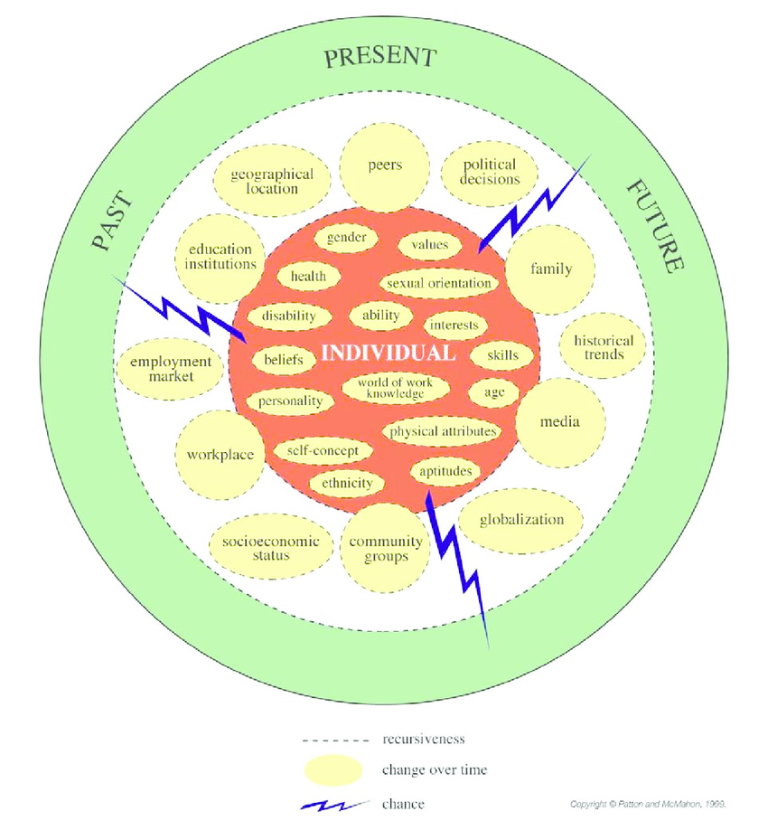

One of my main take-aways from Career Counselling, EDPS 630 was studying different theories of career development and their application to counselling. Researching theoretical concepts, such as Hollands Theory of Personality, Super’s Developmental Theory, Social Cognitive Career Theory, and Systems Theory Framework. I worked in a group project studying Systems Theory Framework (STF). System Theory Framework combines and recognizes the contribution of all theories and the interconnectedness of personal and career influences from a holistic approach. Below is a photo that describes the holistic, interconnectedness approach that STF works from.
While studying career counselling, I was able to examine why I choose a career in counselling and how meaningful counselling work as been to me. I believe it is important to feel a sense of meaning and purpose in your work which is why I choose a career in helping others. Below are excerpts from discussion board postings in EDPS 630 that showcase my passion for counselling and choosing a career that coincides with your values, and interests.
Week 2
“In regards to career counselling, I found positive emotions and flow to be the most useful application with career counselling. When reading all the applications, I felt drawn to positive emotions and flow as these are said to be central to feeling happy and studies argue that individuals who experience more positive emotions in their work relate more positive emotions into their personal lives and fill more fulfilled in general (Fredrickson, 2013). When I am counselling in school, I am filled with positive emotions which relates to job satisfaction as counselling fits my ideal career interests and skills. Dik et al. (2015) states employees who feel positive emptions and flow are highly engaged and feel a sense of purpose at work. I definitely feel a heightened satisfaction and performance when I am feeling more positive and during a high flow state.”
Dik, B. J., Duffy, R. D., Allan, B. A., O’Donnell, M. B., Shim, Y., & Steger, M. F. (2015). Purpose and meaning in career development applications. The Counseling Psychologist, 43(4), 558–585. http://doi.org.ezproxy.lib.ucalgary.ca/10.1177/0011000014546872
Fredrickson, B.L. (2013). Positive emotions broaden and build. Advances on Experimental Social Psychology, 47, 1-53. DOI: 10.1016/B978-0-12-407236-7.00001-2
Week 3
The results of my Life Values Inventory identified my core values as concern for others, belonging, and responsibility. I am not surprised by these especially concern for others and belonging. I find that I have always been concerned for others, which is why I went into teaching and counselling because I care for the welfare and well-being of people. I am also a very social person and crave a sense of belonging, which is why I love teaching and schools because I am social all day and can help students feel like that belong, whether that be in the classroom, or a club, I want students to feel comfortable to succeed and feel that they belong. I believe that these main values have contributed to educational direction as I want to be responsible for the welfare of others and be someone that people can depend on.
Week 5
“Do whatever makes you happy” My parents always encouraged to pick a career that would make me feel fulfilled. My dad said he become a firefighter because he wanted to help people and it made him happy and whatever makes me happy is what I should do. In high school I chose electives like psychology and travel and tourism because I was interested in these subjects and thought that I could teach them well if I became a teacher. My career aspirations can be explained by both motivation and achievement levels (Sinclair and Carlsson, 2013). In University I was most interested in psychology and sociology so that is that I pursued. I never felt as though my options were narrowed by gender or culturally specific boundaries as my parents’ gender and cultural attitudes were always open and encouraging regardless of sex or prestige (Swanson and Fouad, 2015).
Sinclair, S., & Carlsson, R. (2013). What will I be when I grow up? The impact of gender identity threat on adolescents’ occupational preferences. Journal of Adolescence, 36, 465-474.
Swanson, J, & Fouad, N. (2015). Career Theory & Practice. Learning Through Case Studies. Sage Publications, Inc.